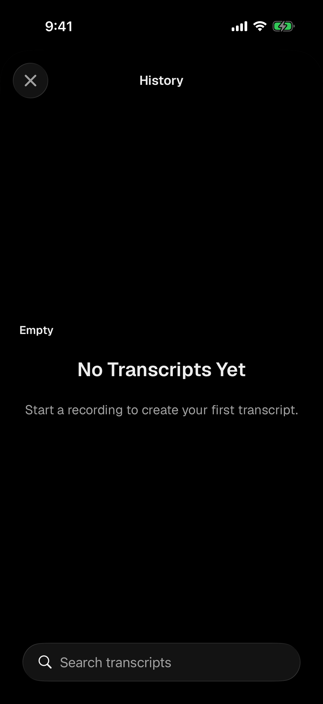
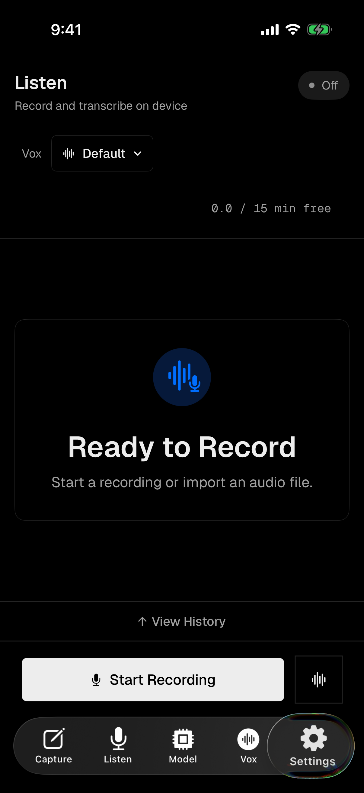

If you are searching for the best voice-to-text keyboard for iPhone, you probably want something more specific than a generic notes recorder. You want to speak into the exact text field you are editing: a Safari form, a message thread, an email draft, a note, a search box, or a team chat.
That distinction matters. A voice memo app records audio. A transcription app creates a document you copy from later. A voice-to-text keyboard should behave like a keyboard: open the text field, switch keyboards, tap the microphone, speak, and insert the text where your cursor already is.
Vox.md is built for people who want private iPhone dictation in every app. It adds a microphone keyboard to iOS, uses on-device transcription after setup with an installed model, does not require Full Access for core dictation, and keeps transcripts in local history instead of sending your spoken text to a server.

Start From a Private Recording Surface
The main Vox.md app gives you a clear standby state, quick recording control, model selection, and a path into history. The keyboard extension is for typing into other apps; the main app is where setup, review, and local transcript management live.
What Matters in an iPhone Voice-to-Text Keyboard?
There are plenty of ways to dictate on an iPhone, including Apple's built-in keyboard microphone. But when you are choosing a dedicated voice-to-text keyboard, the important criteria are practical and privacy-specific.
The key tradeoff is not simply "voice-to-text versus typing." The real question is whether you want a cloud-connected assistant, Apple's default system dictation, or a local keyboard workflow designed around private text entry.
| Option | Best for | Tradeoff |
|---|---|---|
| Apple Dictation | Quick built-in dictation with no extra app install. | Less control over a dedicated local transcript workflow and app-specific keyboard setup. |
| Cloud transcription apps | Long recordings, meetings, summaries, and shared documents. | Often require uploading audio or copying text back into the app where you actually need it. |
| Vox.md | Private iPhone voice-to-text in the text field you are already editing. | Requires installing and enabling a custom keyboard, plus local model setup for on-device transcription. |
How Vox.md Handles Private Dictation
Vox.md is an iOS app and keyboard extension. After installing the app, you enable the Vox.md keyboard in iOS Settings. Then, anywhere the iPhone keyboard appears, you can switch to Vox.md and dictate text directly into the field.
The privacy model is intentionally simple: core transcription runs locally on your iPhone after setup with an installed model. Vox.md's website and privacy policy describe that microphone audio is processed on-device, not uploaded to a server, and discarded after transcription. The app also does not require an account for dictation.
Vox.md's keyboard does not require Apple's Full Access permission for the core voice-to-text workflow. That is important because Full Access can allow a third-party keyboard to communicate more broadly. Vox.md is designed so the main dictation path works without asking for that switch.


The local history view is useful for real work. If a transcript matters, you can return to it. If it does not, delete it. This is the difference between dictation as a disposable keyboard action and dictation as a recoverable writing workflow.
Best iPhone Voice-to-Text Keyboard Use Cases
Messages and Short Replies
When a reply is too long to thumb-type but too casual for a full recording workflow, a keyboard-based dictation app is the fastest path. Open the thread, switch to Vox.md, speak, and send after reviewing the text.
Safari Forms and Search Boxes
Most transcription apps are awkward for web forms because they put the transcript somewhere else. Vox.md's keyboard approach is meant for the active field: search queries, support forms, product feedback, account notes, and any browser text box.
Notes, Drafts, and Outlines
Voice is excellent for first drafts. Use Vox.md when you want to capture a thought in Notes, start an email, rough out a paragraph, or leave yourself a local transcript you can clean up later.
Work Chat Without a Cloud Dictation Service
For Slack, Discord, email, and project tools, privacy expectations can be higher than in a casual note. Vox.md is designed for people who prefer local transcription and do not want their raw audio uploaded just to get words into a field.
How to Choose the Best Voice-to-Text Keyboard for Your iPhone
Use Apple's built-in dictation if you want the default option and do not need a separate local history or custom keyboard workflow. Use a cloud transcription product if you need meeting notes, summaries, speaker labels, or team collaboration around long recordings.
Choose Vox.md if your main need is private voice-to-text inside the apps you already use. It is built around a keyboard extension, local processing after setup, no required Full Access for core dictation, and a local transcript history.
One final note: speech recognition is still machine learning. Transcription quality can vary based on model choice, microphone quality, background noise, accent, cadence, and the words being spoken. Always review important text before sending it, and do not rely on any dictation tool for critical legal, medical, safety, or emergency transcription without independent verification.
Try Private Voice-to-Text on iPhone
Install Vox.md, enable the keyboard, keep Full Access off for core dictation, and start speaking into the places you already type.